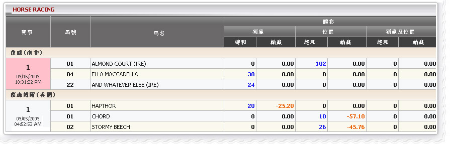

賽馬
定義:
查看代理人的贏/輸根據門占成票已投注種類獨贏，位置或獨贏/位置。此報告顯示所有正在進行和當日收票而已。要查看投注歷史上點擊金額總數欄

賽果總投注
費威(南非), 會員投注以下馬匹 :
- ALMOND COURT: 金額 = 1020, 投注種類: 位置, 代理占成 = 10%
--> 代理收入根據占成 =金額*占成 = 1020*10% = 102
- ELLA MACADELLA: 金額 =300, 投注種類: 獨贏, 代理占成 = 10%
--> 代理收入根據占成 =金額*占成 = 300*10% =
30
- AND WHATEVER ELSE: 金額 =240, 投注種類: 獨贏, 代理占成
--> 代理收入根據占成 = 金額*占成 = stake* PT = 240*10% =
24
注意： 這些注單仍然在進行，因此，所有贏/輸數字= 0
慕森博爾(英國)， 會員投注以下馬匹
- HAPTHOR: 金額 = 200, 賠率 = 2.26, 投注種類: 獨贏, 代理占成 = 10%, 投注狀態: 贏
--> 代理收入根據占成=金額*占成 = 200*10% = 20
--> 代理贏/輸根據占成 = -(金額*占成*(賠率-1))=
-25.2
- CHORD: 金額 = 100, 賠率 =6.71, 投注種類: 位置, 代理占成 = 10%,投注狀態: 贏
--> 代理收入根據占成 = 金額*占成 = 100*10% = 10
--> 代理贏/輸根據占成 = -(金額*占成*(賠率-1)) =
-57.10
- STORMY BEECH: 金額 = 260, 賠率 = 2.76, 投注種類: 位置, 代理占成 = 10%, 投注狀態: 贏
--> 代理收入根據占成 = 金額*占成 = 260*10% = 26
--> 代理贏/輸根據占成 = -(金額*占成*(賠率-1)) =
-45.76